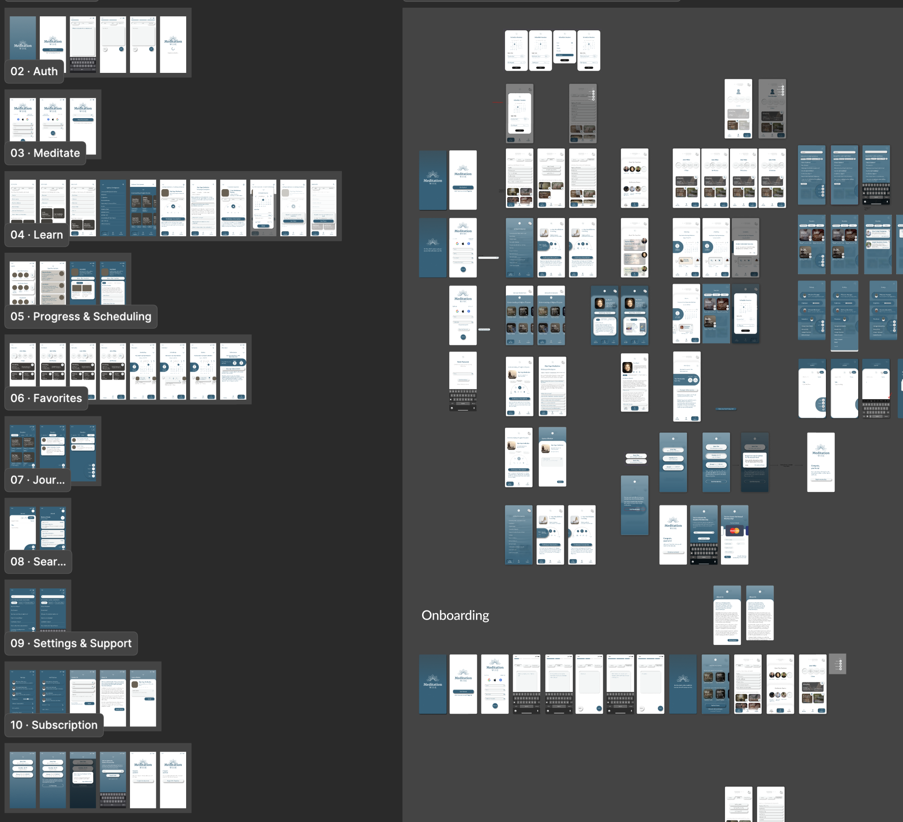

MeditationWise
End-to-end mobile UX design for a meditation platform that connects users to authentic, tradition-rooted practices while supporting long-term habit formation.
Executive Summary
- Lead designer on an end-to-end mobile UX redesign for a meditation startup — covering navigation, session flows, and a scalable design system
- 9+ usability sessions over 4 months surfaced the core pitfall: discovery flows that overwhelmed users before they could form a practice
- Redesigned the onboarding and browse experience to reduce cognitive load while preserving the cultural depth that made MeditationWise distinct from generic wellness apps
Context
Most meditation apps optimize for quick content consumption. MeditationWise needed a different direction: helping users build a consistent personal practice rooted in cultural context, intention, and trust.
Challenge
- Differentiate from generic mindfulness apps without overwhelming new users.
- Reduce cognitive load while still supporting breadth of traditions and content types.
- Create a foundation that can scale as content, sessions, and user goals expand.
Initial analysis of the existing platform revealed fragmented navigation and limited emotional resonance. The redesign had to make exploration easier while preserving the depth and authenticity that made the product meaningful.


Process
I followed a double-diamond structure across discovery, definition, development, and delivery, combining interviews, usability testing, flow mapping, and iterative prototyping.
- Conducted interviews and task analysis to identify breakdowns in navigation and relevance.
- Built personas and journeys to prioritize decisions around search, categorization, and guidance.
- Tested wireframes and prototypes with users, then refined hierarchy and interaction patterns.

Solution
The final concept prioritized immediate wayfinding, reduced decision fatigue, and stronger contextual framing for each technique. Users could navigate by need, level, and tradition, while core habit-supporting features (favorites, scheduling, journaling, progress) reinforced continuity.
The visual language was intentionally soft and grounded, with clear information hierarchy and supportive microcopy to keep sessions approachable rather than transactional.


Impact & Outcomes
- Identified key usability blockers through testing with 9+ participants.
- Improved comprehension of content structure and technique discovery pathways.
- Established a scalable design direction aligned with long-term engagement.
- Strengthened the product's differentiation around authenticity and guided practice.

View Deliverable PDF